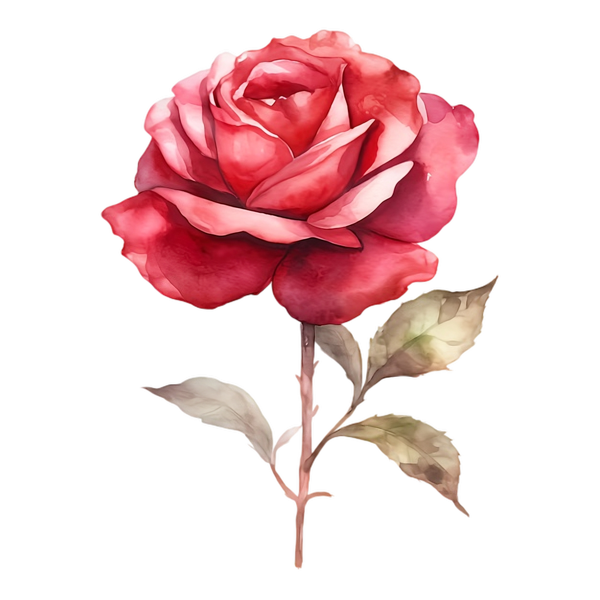

January 16
The Morning Mist
How the dew settles on the pink Japanese tree... it feels as though the garden is breathing in the silver light.
View Entry —
Hand-picked Treasures
Small decorative pots for quiet corners.

Nurture from seed to bloom.

Ceramics in pastel tones.

Everlasting petals framed in wood.

Rare wildflower blends.


Inspired by the high sun of a midsummer garden. These roses are selected for their brilliant, light-catching petals and saturated edges, acting as a living reminder of the energy and pulse found in nature’s quietest corners.
Quiet Garden began as a single, dusty corner in a sun-drenched painting studio. We believe that every flower is one of nature's own deliberate brushstrokes—a quiet masterpiece meant to bring sanctuary to the modern home.
What started as a personal collection of rare seedlings has grown into a curated gallery of botanical art. Our mission remains simple: to reconnect the urban soul with the slow, grounding rhythm of the earth, one leaf at a time.
Notes from the garden path
How the dew settles on the pink Japanese tree... it feels as though the garden is breathing in the silver light.
View Entry —
Finding the perfect shade for our ceramic collection. We found a stone by the creek that matched the sky exactly.
View Entry —